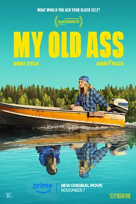

6.9
我的老屁友
My Old Ass
2024
加拿大
评分 6.9
导演:
梅根·帕克
演员:
梅西·斯黛拉 / 奥布瑞·普拉扎 / 珀西·海恩斯·怀特 / 麦迪·齐格勒
类型:
剧情,喜剧,爱情
剧情简介
在偏远湖岛的夏天，十八岁的埃利奥特和朋友们围坐在篝火旁，伴着潮湿夜风和自由的笑声，迎接自己即将展开的成年生活。随着烟雾升空，她在致幻菇的作用下踏入一段离奇而轻盈的旅程——她遇见了三十多年后的自己，一个语气爽朗、略带世故却依旧保留着她年轻时倔强气息的女人。未来的埃利奥特像是从另一个维度闯入，既熟悉又陌生，每一句调侃和劝告都带着时间磨出来的迟疑与温柔。在日常里，年轻的埃利奥特仍努力维持着那个无忧无虑的自己：与朋友游泳、奔跑、开玩笑，却又在夜深独处时回想未来版本的警告。那句“远离名叫查德的人”像是潜藏在她脑中的倒刺，让她对爱情、选择和命运产生新的疑问。她开始观察身边的人，也开始怀疑自己是否真的准备好面对未来带来的重量。当现实与未来的影子交叠，她在一段新生的情感中体验到兴奋、犹疑以及第一次真正意义上的心动，而未来的自己也在不断提醒她：有些道路要自己试，有些痛要自己受。影片在轻松的对话与自然的生活场景中编织出一种温暖的魔幻感，岛上的光线、湖面的涟漪、少女间的玩笑与亲密，都构成了埃利奥特成长的底色。她逐渐明白，未来不是预言，而是一种选择；成长不是答案，而是一种勇气。影片以轻快的节奏和真挚的情感，将青春的不确定和自我追寻的悸动展现得明亮而柔软。